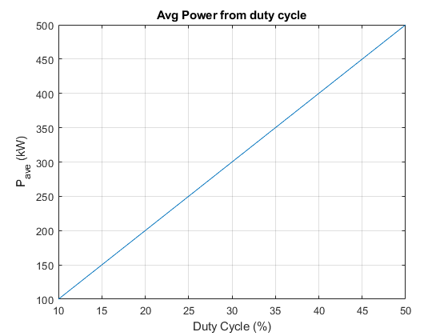

Contents
import radarClass
close all
clear all
close all
constants
c = physconst("lightspeed");
km = 10^3;
us = 10^-6;
k = physconst("Boltzman");
To = 290;
F = 1.25;
G = 10;
dragon defintions
dragon.lengthRange = [10 30];
dragon.RCSRange = [1 20];
dragon.speedRange = [0 500];
dragon.averageSpeed = 200;
dragon.maxAltitude = 15*km;
bewilderbeast.RCS = 1000;
bewilderbeast.maxSpeed = 100;
set paramters, create radar objects
dewds1 = radarClass("dewds1");
dewds2 = radarClass("dewds2");
radar =
radarClass with properties:
type: "dewds2"
storage: []
dopMax: []
dopAvg: []
antennaSizeX: 5
antennaSizeY: 5
numAntenna: 4
antennaSpin: []
rangeRes: []
Ae: 25
TpTrack: 6.6713e-08
TpSearch: 2.0014e-07
PRISearch: []
PRITrack: []
freq: 1.0000e+09
lambda: []
PRIPerDwell: []
bandWidthTrack: 1.4990e+07
bandWidthSearch: 4.9965e+06
TDwellSearch: []
TDwellTrack: []
TfsSearchMin: []
TfsSearchMax: []
PRFAvgMin: []
PRFMaxMin: []
PPeak: 1000000
Pt: 1000
Pt_track: 50000
duty_cycle: 1.0000e-03
Gain: []
rangeTrack: [300 30000]
rangeSearch: [30000 300000]
azCoverage: 6.2832
elCoverageS: []
elCoverageT: []
solidAngleTrack: []
solidAngleSearch: []
beamWidthTrack: []
beamWidthSearch: []
nBeamsS: []
nBeamsT: []
R_warningTime: 300
R_rangeResTrack: 10
R_rangeResSearch: 30
SNRmin_search: 398.1072
SNRmin_track: []
c: 299792458
k: 1.3807e-23
To: 290
Ls: 1
F: 1.4130
calcSNRTrack: []
calcSNRSearch: []
calculation requirements
dewds1.elCoverageS = dewds1.elAngle(min(dewds1.rangeSearch), dragon.maxAltitude);
dewds2.elCoverageS = dewds2.elAngle(min(dewds2.rangeSearch), dragon.maxAltitude);
dewds2.elCoverageT = dewds2.elAngle(min(dewds2.rangeTrack), dragon.maxAltitude);
dewds1.PRISearch = dewds1.PRI_calc(max(dewds1.rangeSearch));
dewds1.PRIPerDwell = dewds1.beamWidthSearch/dewds1.PRISearch;
dewds2.PRISearch = dewds2.PRI_calc(max(dewds2.rangeSearch));
dewds2.PRITrack = dewds2.PRI_calc(max(dewds2.rangeTrack));
dewds1.solidAngleSearch = dewds1.solidAngle(dewds1.elCoverageS);
dewds2.solidAngleSearch = dewds2.solidAngle(dewds2.elCoverageS);
dewds2.solidAngleTrack = dewds2.solidAngle(dewds2.elCoverageT);
GHz = 1*10^9;
dewds1BW_preCalc = dewds1.beamWidth(1*GHz, dewds1.antennaSizeX);
dewds2BW_preCalc = dewds2.beamWidth(1*GHz, dewds2.antennaSizeX);
dewds1.beamWidthSearch = dewds1.beamWidth(dewds1.freq, dewds1.antennaSizeX);
dewds2.beamWidthSearch = dewds2.beamWidth(dewds2.freq, dewds2.antennaSizeX);
dewds2.beamWidthTrack = dewds2.beamWidth(dewds2.freq, dewds2.antennaSizeX);
dewds1.nBeamsS = dewds1.beamCoverage(dewds1.solidAngleSearch, dewds1.beamWidthSearch, dewds1.beamWidthSearch);
dewds2.nBeamsS = dewds2.beamCoverage(dewds2.solidAngleSearch, dewds2.beamWidthSearch, dewds2.beamWidthSearch);
dewds2.nBeamsT = dewds2.beamCoverage(dewds2.solidAngleTrack, dewds2.beamWidthTrack, dewds2.beamWidthTrack);
Search and Track TFS
numPulses = 1:2;
dewds1 = dewds1.time_range(0, max(dragon.speedRange), 0);
dewds2 = dewds2.time_range(numPulses, max(dragon.speedRange), 25);
dewds2 = dewds2.time_range(numPulses, max(dragon.speedRange), 18);
dewds2 = dewds2.time_range(1, dragon.averageSpeed, 47);
dewds2 = dewds2.time_range(numPulses, dragon.averageSpeed, 23);
Number of dragons is too high!Number of dragons is too high!
Sweep Duty Cycles to see a range of Pave we can get
dutyCycle = 0.1:0.1:0.5;
pAve = dewds1.sweep_Pave(1e6, dutyCycle);
dewds2 = dewds2.SNRTrack(dragon.RCSRange);
dewds2 = dewds2.SNRSearch(dragon.RCSRange);
testSNR = 10*log10(dewds2.calcSNRSearch(1));
dewds1 = dewds1.SNRSearch(dragon.RCSRange);
testSNR = 10*log10(dewds1.calcSNRSearch(1));
dewds1.storage = calc_storage(dewds1);
dewds2.storage = calc_storage(dewds2);
figure
plot(dutyCycle.*100, pAve./1e3)
xlabel('Duty Cycle (%)')
ylabel('P_{ave} (kW)')
grid on
title('Avg Power from duty cycle')
dewds1 = dewds1.time_range(numPulses, max(dragon.speedRange), 18);
dewds1.storage = calc_storage(dewds1, dragon);
dewds2.storage = calc_storage(dewds2, dragon)
stop
stop
dewds2 =
radarClass with properties:
type: "dewds2"
storage: [178.6955 71.4782]
dopMax: 3.3356e+03
dopAvg: 1.3343e+03
antennaSizeX: 5
antennaSizeY: 5
numAntenna: 4
antennaSpin: []
rangeRes: []
Ae: 25
TpTrack: 6.6713e-08
TpSearch: 2.0014e-07
PRISearch: 0.0020
PRITrack: 2.0014e-04
freq: 1.0000e+09
lambda: 0.2998
PRIPerDwell: []
bandWidthTrack: 1.4990e+07
bandWidthSearch: 4.9965e+06
TDwellSearch: [0.0020 0.0040]
TDwellTrack: [2.0014e-04 4.0028e-04]
TfsSearchMin: [1.9749 3.9498]
TfsSearchMax: 24.0134
PRFAvgMin: 2.6685e+03
PRFMaxMin: 6.6713e+03
PPeak: 1000000
Pt: 1000
Pt_track: 50000
duty_cycle: 1.0000e-03
Gain: 3.4659e+03
rangeTrack: [300 30000]
rangeSearch: [30000 300000]
azCoverage: 6.2832
elCoverageS: 0.4636
elCoverageT: 1.5508
solidAngleTrack: 6.2819
solidAngleSearch: 2.8099
beamWidthTrack: 0.0534
beamWidthSearch: 0.0534
nBeamsS: 986.7644
nBeamsT: 2.2060e+03
R_warningTime: 300
R_rangeResTrack: 10
R_rangeResSearch: 30
SNRmin_search: 398.1072
SNRmin_track: []
c: 299792458
k: 1.3807e-23
To: 290
Ls: 1
F: 1.4130
calcSNRTrack: [1.3210e+11 1.3210e+03]
calcSNRSearch: [3.7100e+06 371.0049]
